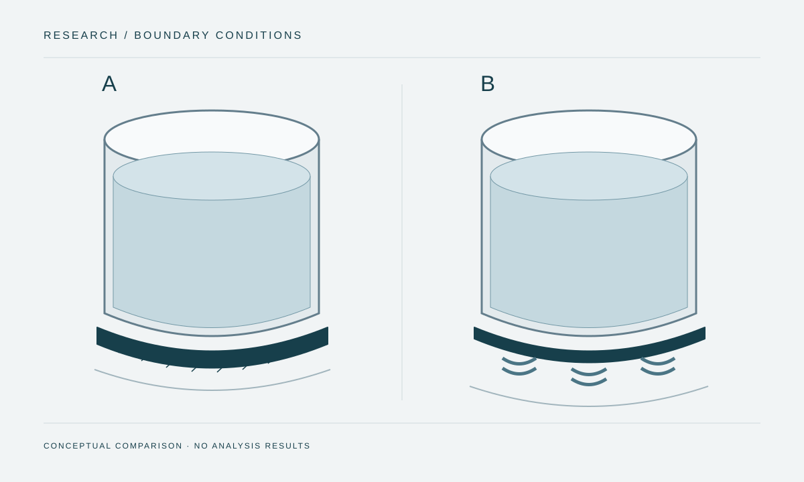

A paper on the performance of seismically isolated water storage tanks, published at the 2018 South American Conference on Structural Engineering.

Figure provenance
- Source
- Original portfolio illustration; not extracted from the proceedings.
- Tool
- SVG
- Date
- 2026-10-08
- Description
- Original conceptual comparison between a fixed-base tank and a tank with an isolation interface.
- Usage
- Conceptual comparison. Does not represent the paper's dimensions or results.
Authorship
The PUCP record lists E. J. Mamani, S. Ambrosio and V. I. Fernández-Dávila as authors.
Scope and sources
This entry presents bibliographic information from the institutional record. The full paper has yet to be added; parameters and findings from the other tank publications belong to their respective studies.
The oral presentation is listed in my CV. The institutional source confirms the publication but does not specify the individual presentation format.
Supporting material
- Full paper: not yet included.
- Session programme and presentation record: not yet included.
- Figures from the paper: not included in this entry.